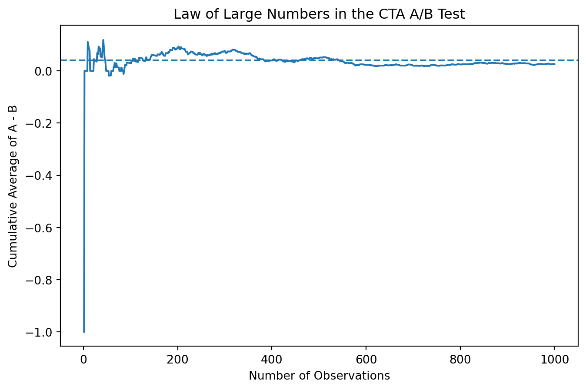

Simulating Key Ideas from Classical Frequentist Statistics
Author
Weibing Xue
Published
April 15, 2026
Introduction
In many online businesses, small design choices can have a large impact on user behavior. One common example is the wording of a “call to action” (CTA), such as a button encouraging users to sign up for a newsletter or create an account. Even subtle differences in phrasing may influence whether a user decides to engage.
To better understand which version performs better, companies often run A/B tests. In an A/B test, users are randomly assigned to different versions of a webpage, and their behavior is tracked. By comparing outcomes across groups, we can use data to make informed decisions rather than relying on intuition.
In this post, I simulate an A/B test comparing two different CTA messages. Using this example, I walk through key ideas from classical frequentist statistics, including the law of large numbers, the central limit theorem, bootstrap methods, and hypothesis testing.
The A/B Test as a Statistical Problem
Each visitor in the A/B test either signs up or does not sign up, so we can model each outcome as a Bernoulli random variable. Let the probability of signing up be denoted by ( ).
Because the version of the call to action (CTA) may influence user behavior, we allow the sign-up probability to differ across groups. Let ( _A ) denote the probability of signing up under CTA A, and ( _B ) denote the probability under CTA B.
The main quantity of interest is the difference in these probabilities: [ = _A - _B ]
This parameter captures how much better (or worse) one version performs relative to the other.
To estimate this quantity, we use the difference in sample means: [ = {X}_A - {X}_B ]
Since each observation is either 0 or 1, the sample mean corresponds to the proportion of users who signed up in each group.
Simulating Data
In real-world A/B testing, we typically do not know the true sign-up probabilities for each group. However, for the purpose of this simulation, we will assume known values so that we can evaluate how well our estimators perform.
Specifically, we set the probability of signing up under CTA A to ( _A = 0.22 ) and under CTA B to ( _B = 0.18 ). This implies that the true difference in conversion rates is ( = 0.04 ).
Using these values, we simulate user outcomes for each group. Each observation is drawn from a Bernoulli distribution, where a value of 1 indicates a sign-up and 0 indicates no sign-up.
As the sample size grows, the sample average tends to move closer to the true population value. In this example, that means the estimated difference in sign-up rates should gradually stabilize around the true difference ( = 0.04 ).
To illustrate this idea, I take the simulated outcomes from the previous section, compute the observation-by-observation differences between the two groups, and then track the cumulative average as the number of observations increases.
import numpy as npimport matplotlib.pyplot as pltdiff_vec = A - Brunning_mean = np.cumsum(diff_vec) / np.arange(1, n +1)plt.figure(figsize=(8, 5))plt.plot(np.arange(1, n +1), running_mean)plt.axhline(theta_true, linestyle="--")plt.xlabel("Number of Observations")plt.ylabel("Cumulative Average of A - B")plt.title("Law of Large Numbers in the CTA A/B Test")plt.show()

The plot is quite noisy at the beginning, when only a small number of observations have been included. As more data accumulate, the cumulative average becomes more stable and moves closer to the true difference of 0.04. This is exactly the pattern predicted by the law of large numbers.
Bootstrap Standard Errors
In order to quantify the uncertainty in our estimate ( ), we need to compute its standard error. However, we only observe one sample and cannot repeatedly run the experiment in reality.
The bootstrap provides a way to approximate the sampling distribution by resampling from the observed data. Specifically, we repeatedly draw samples with replacement from the original data and recompute the estimator each time.
By looking at the variability across these bootstrap estimates, we can approximate the standard error of ( ).
The bootstrap standard error and the analytical standard error are very close, suggesting that the bootstrap is working well in this setting.
The 95% confidence interval includes zero, which indicates that we do not have strong evidence that the two CTAs perform differently at the 5% significance level.
More importantly, the confidence interval provides a range of plausible values for the true effect, highlighting the uncertainty in our estimate.
The Central Limit Theorem
The central limit theorem states that, regardless of the underlying distribution, the sampling distribution of the sample mean will approach a normal distribution as the sample size increases.
In this setting, even though each individual observation is binary (0 or 1), the distribution of the estimator ( ) will become approximately normal as the sample size grows.
To illustrate this, I simulate the sampling distribution of ( ) for different sample sizes and examine how the shape changes.
When the sample size is small, the sampling distribution is more irregular and less smooth. As the sample size increases, the distribution becomes more symmetric and bell-shaped, resembling a normal distribution.
This pattern illustrates the central limit theorem in action: even though the underlying data are not normally distributed, the estimator ( ) becomes approximately normal when the sample size is large.
Hypothesis Testing
We now formally test whether the two CTAs perform differently. The null hypothesis is that there is no difference in sign-up rates between the two groups:
[ H_0: = 0 ]
The alternative hypothesis is that there is a difference:
[ H_1: ]
To test this, we construct a test statistic by standardizing our estimate using its standard error.
The test statistic measures how far our estimate is from zero in standard error units. The p-value represents the probability of observing a result as extreme as this, assuming the null hypothesis is true.
In this case, the p-value is relatively large, meaning that such a result would not be unlikely if there were truly no difference between the two CTAs. Therefore, we fail to reject the null hypothesis at the 5% significance level.
This result is consistent with the confidence interval from the previous section, which also included zero.
The T-Test as a Regression
It turns out that the two-sample test we performed above can also be expressed as a simple linear regression.
We combine the data from both groups into a single dataset. Let ( Y_i ) indicate whether user ( i ) signed up (1 if yes, 0 if no), and let ( D_i ) be an indicator variable equal to 1 if the user was exposed to CTA A and 0 if exposed to CTA B.
We then estimate the following regression model:
[ Y_i = _0 + _1 D_i + _i ]
In this model, ( _0 ) represents the average sign-up rate for group B, while ( _1 ) captures the difference in average sign-up rates between group A and group B.
import pandas as pdimport statsmodels.api as smdf = pd.DataFrame({"Y": np.concatenate([A, B]),"D": np.concatenate([np.ones(n), np.zeros(n)])})X = sm.add_constant(df["D"])model = sm.OLS(df["Y"], X).fit()model.summary()
OLS Regression Results
Dep. Variable:
Y
R-squared:
0.001
Model:
OLS
Adj. R-squared:
0.001
Method:
Least Squares
F-statistic:
2.205
Date:
Wed, 15 Apr 2026
Prob (F-statistic):
0.138
Time:
21:32:09
Log-Likelihood:
-961.28
No. Observations:
2000
AIC:
1927.
Df Residuals:
1998
BIC:
1938.
Df Model:
1
Covariance Type:
nonrobust
coef
std err
t
P>|t|
[0.025
0.975]
const
0.1760
0.012
14.217
0.000
0.152
0.200
D
0.0260
0.018
1.485
0.138
-0.008
0.060
Omnibus:
467.203
Durbin-Watson:
1.979
Prob(Omnibus):
0.000
Jarque-Bera (JB):
861.348
Skew:
1.586
Prob(JB):
9.13e-188
Kurtosis:
3.523
Cond. No.
2.62
Notes: [1] Standard Errors assume that the covariance matrix of the errors is correctly specified.
The estimated coefficient on ( D_i ) is exactly equal to the difference in sample means computed earlier. This confirms that the regression approach produces the same estimate as the two-sample t-test.
Additionally, the p-value associated with ( D_i ) matches the result from the hypothesis test, reinforcing the equivalence between these two approaches.
The Problem with Peeking
In practice, analysts may be tempted to repeatedly check results during an experiment and stop early once a statistically significant result is found. This practice is known as “peeking.”
However, peeking can lead to an increased probability of false positives. Even if there is no true difference between the two groups, repeatedly testing the data increases the chance of incorrectly rejecting the null hypothesis.
When the null hypothesis is true, we would expect the false positive rate to be around 5% if we conduct a single test. However, when we repeatedly check the results and stop early when significance is reached, the false positive rate increases substantially.
This simulation shows that peeking inflates the Type I error rate, meaning that we are more likely to incorrectly conclude that there is an effect when none exists.
In practice, this highlights the importance of pre-specifying sample sizes or using proper sequential testing methods rather than repeatedly checking for significance.
Conclusion
This simulation-based analysis illustrates how classical frequentist tools can be used to analyze A/B test data. Through the law of large numbers and the central limit theorem, we see how estimators behave as sample sizes grow. Bootstrap methods help quantify uncertainty, while hypothesis testing provides a framework for decision-making.
At the same time, the peeking example highlights the importance of proper experimental design. Even well-established statistical tools can lead to misleading conclusions if used improperly. Overall, these results emphasize both the power and the limitations of statistical inference in real-world decision-making.